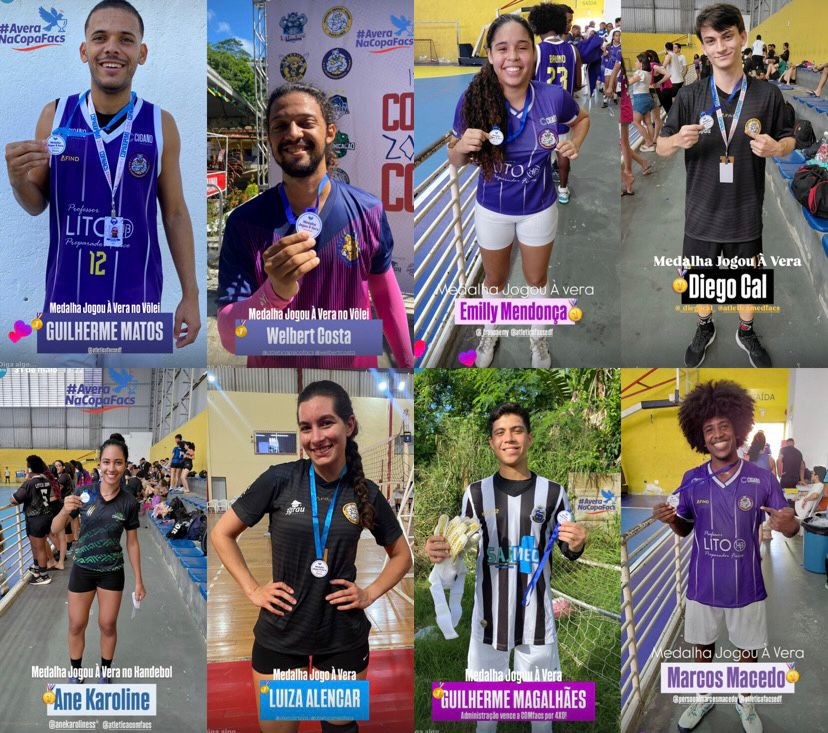

Esportes
Copa FACS: Primeiro dia cheio de emoções
O primeiro dia da Copa FACS foi marcado por goleadas e viradas emocionantes em várias modalidades esportivas.
Continue lendo.png)
O primeiro dia da Copa FACS foi marcado por goleadas e viradas emocionantes em várias modalidades esportivas.
Continue lendo